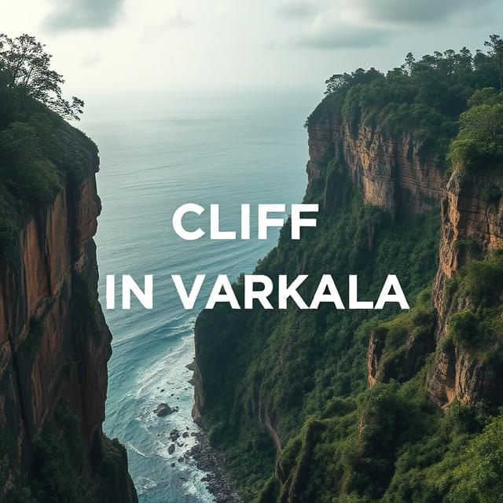
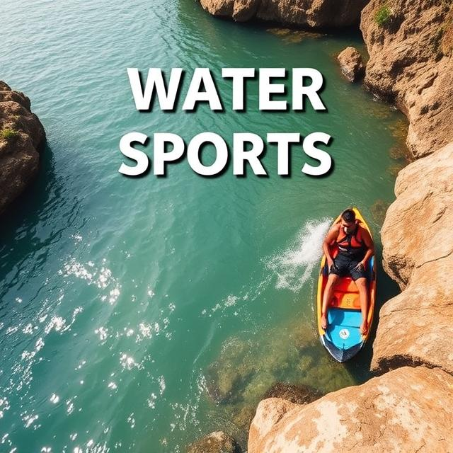

Lets Explore Varkala Together




| Morning | Afternoon | Evening | Dinner | |
| Day1 | Arrive in Varkala, check-in 🛬🏨 | Relax on Varkala Beach 🏖️ | Walk along Varkala Cliff, enjoy sunset views 🌅 | Cliffside restaurant with a sunset view 🍽️🍷 |
| Day2 | Visit Papanasam Beach 🌊 | Explore Kappil Beach 🏝️ | Sunset at Varkala Cliff 🌅 | Seafood dinner by the beach 🦞🍤 |
| Day3 | Visit Janardhana Swamy Temple 🏛️ | Explore Varkala Town 🏙️ | Attend Aarti at the temple 🕯️ or relax at Papanasam Beach 🌊 | Traditional Kerala meal 🍛 |
| Day4 | Day trip to Sivagiri Mutt🕊️ | Visit Sree Narayana Guru Museum 🖼️ | Relax on the beach or enjoy cliff views🌊 | Beachfront dinner 🌮🍜 |
| Day5 | Visit Jatayu Earth Center 🦅 | Explore the center and enjoy the view from the Jatayu Nature Park 🌳 | Sunset walk along Varkala Cliff 🌅 | Local seafood or vegetarian🍲 |
| Day6 | Water sports (parasailing, surfing, kayaking) 🏄♀️ | Relax with a Kerala Ayurvedic massage 💆♀️ | Sunset walk along Varkala Cliff | Local seafood or vegetarian🥘 | Day7 | Day trip to Varkala Backwaters for boating 🚤 | Visit Ponnumthuruthu Island 🌴 | Return to Varkala, relax at the beach or cafes ☕ | Farewell dinner with sea view 🥂🍽️ and return home town |